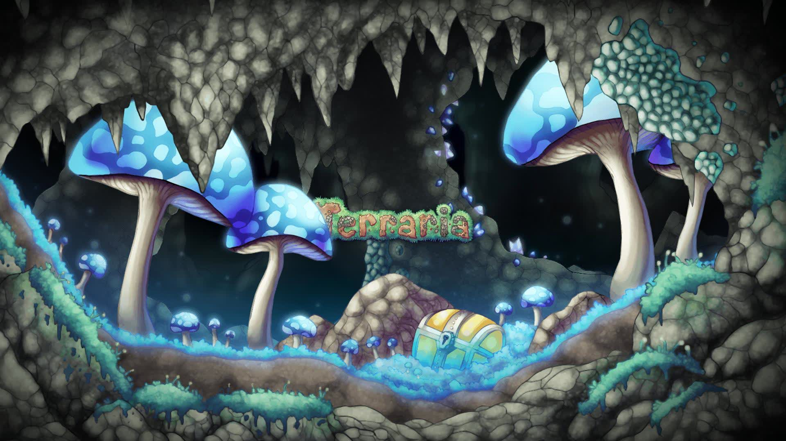
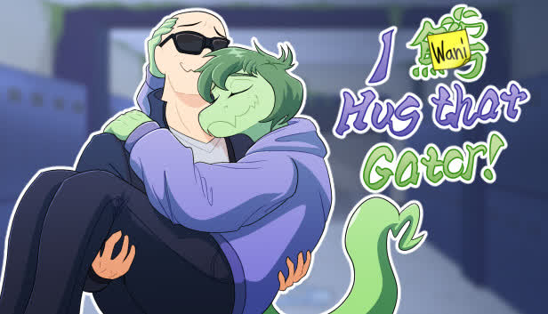
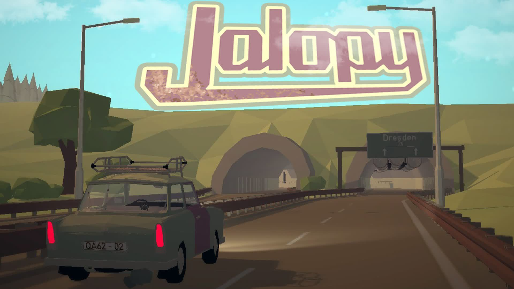
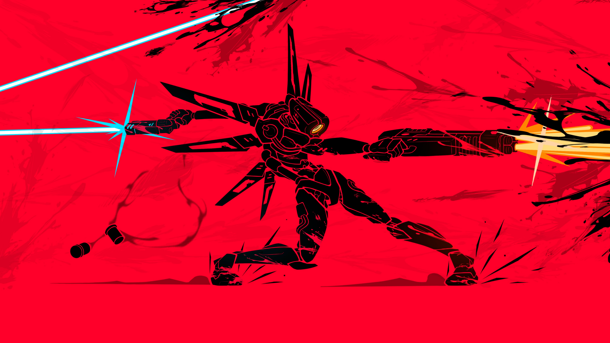
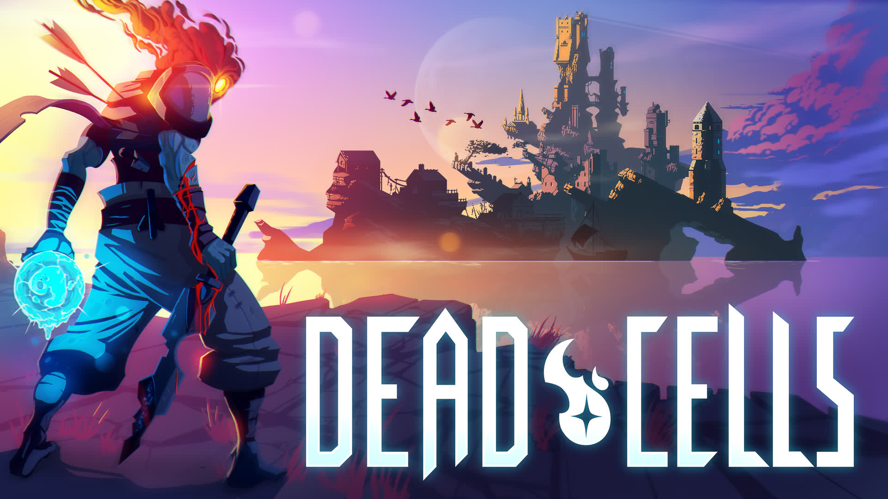
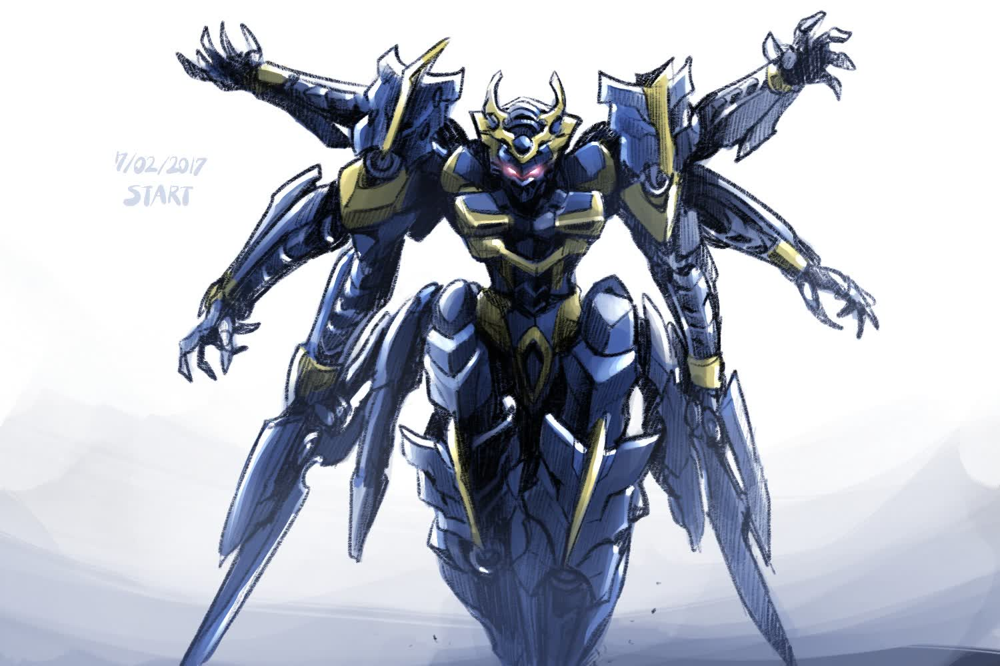
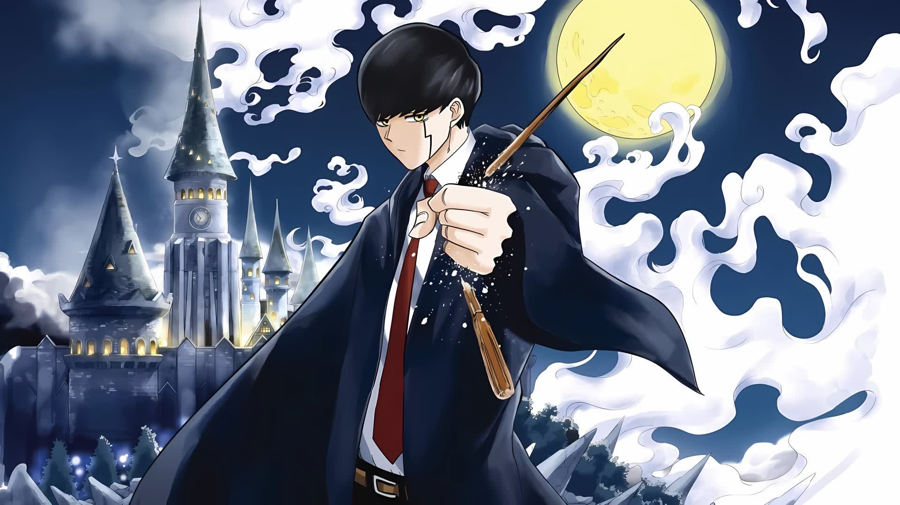

.gif)
Preferências Estelares
Aqui eu vou listar meus gostos que talvez você também goste: jogos, animes, músicas e muitas outras coisas que vi durante minha vida.

Minecraft
Um jogo de construção onde os jogadores podem criar e destruir diferentes tipos de blocos em um mundo tridimensional gerado proceduralmente.
Black Ops 2
FPS aclamado que mistura combates na Guerra Fria e um futuro tecnológico. Famoso por sua campanha ramificada e o icônico modo Zombies.

Undertale
RPG indie onde suas escolhas morais definem o destino dos monstros. Destaca-se por permitir terminar a aventura sem matar ninguém.

Terraria
Aventura 2D épica focada em exploração, construção e combate contra chefes colossais em um mundo procedural.

I Wani Hug That Gator
Visual novel de romance e comédia sobre amadurecimento e escolhas em uma escola de répteis antropomórficos.

Jalopy
Simulador de direção pelo Leste Europeu. Manter seu carro Laika funcionando é o maior desafio desta jornada nostálgica.

Ultrakill
FPS frenético com estética retrô onde o sangue é combustível. Combina movimentação veloz e combate técnico de alto estilo.

Dead Cells
Roguevania 2D de ação intensa estilo Souls-like. Aprenda com a morte em um castelo que muda a cada tentativa.

Knight's & Magic
Knight's & Magic (Naitsu to Majikku) é um isekai mecha sobre Ernesti Echevalier, um programador gênio e fã de robôs que reencarna em um mundo de fantasia com cavaleiros e magia. Ele usa seu conhecimento para pilotar e aprimorar os "Silhouette Knights" (robôs gigantes), buscando realizar seu sonho de construir o mecha supremo.


Seihantai na Kimi to Boku
Suzuki é uma colegial apaixonada, mas o rapaz que ela ama não é nadinha parecido com ela! Enquanto ela é alegre, extrovertida e está sempre tentando se enturmar, seu colega de classe Yusuke Tani é estoico, quieto e parece não se importar com o que as pessoas pensam dele. Será que Suzuki conseguirá superar suas ansiedades e convidá-lo para um encontro, ou descobrirá que os opostos realmente não se atraem?

Kaya-chan wa Kowakunai
Kaya-chan é conhecida como uma criança problemática no jardim de infância, mas nenhum adulto sabe o seu segredo — até Chie-sensei assumir a turma e descobrir a habilidade oculta de Kaya-chan de ver espíritos malignos e derrotá-los com um soco! O que será que vai acontecer com essa garotinha de cinco anos que vive se metendo em confusão quando tudo o que ela quer é ajudar?

Hell Mode: Yarikomizuki no Gamer
Kenichi é atraído pelo jogo sem título que promete um desafio incomparável e um potencial nunca antes visto. Sem hesitar, ele escolhe a dificuldade “Modo Infernal”. Eis que ele reencarna em outro mundo como um servo! Agora chamado Allen, ele começa a explorar os segredos de sua classe, um Invocador. Sem a ajuda de detonadas, guias e fóruns online, ele precisa moldar seu caminho em busca do topo desse novo mundo!

Kimi to Koete Koi ni Naru
Quando Mari, uma estudante do ensino médio, esbarra em um colega atrasado, ela fica surpresa ao descobrir que ele é um homem-fera que vai estudar na mesma escola que ela! Afinal, não é raro homens-fera conviverem com humanos, mas ainda é algo incomum, especialmente devido aos preconceitos que existem. Inicialmente nervosa, Mari logo percebe que há muito mais nele do que sua aparência peluda. Na verdade, quanto mais ela o conhece, mais ela se sente atraída por ele: por sua determinação, sua gentileza e… seu corpo.

Silent Witch
Monica Everett, a Bruxa Silenciosa, é a única maga do mundo que consegue usar magia sem pronunciar encantamentos, uma verdadeira heroína que derrotou sozinha um dragão negro lendário. No entanto, a jovem prodígio, na verdade, é incrivelmente tímida! É isso mesmo: ela aprendeu a invocar feitiços silenciosamente apenas para não falar em público e, apesar de seu poder, não tem um pingo de confiança em si mesma. Agora, Monica recebeu a missão de secretamente proteger o segundo príncipe.

Umamusume Cinderella Gray
Esta é a história de Oguri Cap, uma jovem umamusume que inicia sua jornada na Academia Tracen de Kasamatsu, situada numa região rural. Ela corre de forma avassaladora, desafiando o senso comum. Essa garota que chega a ser chamada de “Monstro” escreve sua lenda na história. Foi dada a largada desta história de uma Cinderela corredora!

Sentai Red Isekai
Asagaki Togo era o Ranger Vermelho em um heroico esquadrão de Rangers. Durante a batalha final contra a última organização do mal, ele sofre uma derrota esmagadora e se resigna à morte. Isto é, até que ele renasce em um mundo totalmente diferente!

Shikanoko Nokonoko Koshitantan
Torako acreditava ter deixado para trás seu passado turbulento como delinquente nos tempos de ensino fundamental, reinventando-se como uma estudante exemplar no ensino médio, sem que ninguém suspeitasse de suas raízes criminosas. No entanto, sua vida dá uma guinada inesperada com a chegada de Nokotan, uma misteriosa aluna transferida com chifres e uma aura inquietante.

Dereru Tonari no Alya-san
Alya é uma aluna transferida bastante popular em sua nova escola, frequentemente exibindo uma atitude fria enquanto tira notas altas. Ela ignora seu colega nerd, Kuze Masachika, exceto quando solta algumas frases de flerte em russo para ele. Mal sabe ela que Kuze entende russo, embora finja que não. Vamos ver até onde essa história de amor maluca os levará!

Boku no Tsuma wa Kanjou ga Nai
Takuma é um cara solteiro que não faz nada além de ir trabalhar e voltar para casa. Cansado demais para fazer tarefas domésticas, ele decide contratar um robô para cozinhar e cuidar da casa. “Mina-chan” é uma governanta tão boa que Takuma brinca que ela deveria se tornar sua esposa.

Lv2 kara Cheat datta
O Reino Mágico de Klyrode convoca centenas de heróis de outros mundos todos os anos para lutar na guerra contra a Escuridão e seu exército de demônios poderosos. Banaza é um desses heróis, convocado da Royal Capital Paluma, mas algo não está certo – Banaza é apenas um comerciante comum.

Kami wa Game ni Ueteiru
Dado o seu (exagero de) tempo livre, os deuses ficaram entediados e decidiram criar batalhas desafiadoras de inteligência para apimentar as coisas! Seus oponentes? A humanidade! Alguns jogadores selecionados, chamados de “apóstolos”, encontram os deuses no campo de jogo do reino espiritual para vencer as divindades em seus próprios jogos.

Tensei shitara Dainana Ouji
Apesar de seu profundo amor pela magia, um jovem feiticeiro nasceu em uma família pobre, sem linhagem sanguínea nem aptidão para o estudo mágico. Após encontrar uma morte prematura e cheia de arrependimentos, ele renasce como Lloyd, o sétimo príncipe do Reino de Saloum, dotado de uma poderosa linhagem mágica. Agora, com todas as suas memórias intactas, ele está determinado a aproveitar essa nova vida!

Saijaku Tamer wa Gomi Hiroi no Tabi
As estrelas representam tudo neste mundo, pois elas conferem habilidades aos Domadores. Assim, quando Ivy veio ao mundo sem uma estrela para si, sua vila interpretou como um mau presságio! Agora exilada, ela leva uma vida solitária, coletando objetos descartados para sobreviver. Tudo muda quando ela cria laços com Sora, uma pequena e frágil criatura gelatinosa encontrada na floresta. A partir de agora, essa dupla delicada inicia uma jornada emocionante de sobrevivência!

Chiyu Mahou no Machigatta
Uma caminhada comum de volta para casa após a escola se transforma em uma jornada épica para Usato! Após ser subitamente transportado para outro mundo juntamente de dois colegas de classe, Usato descobre que foi convocado lá por acidente. No entanto, as coisas mudam de água para o vinho quando ele descobre que tem uma habilidade única para a magia de cura! Agora, ele treina além das limitações humanas, utilizando suas habilidades de autocura para ganhar uma força absurda e uma resistência incomparável.

Oroka na Tenshi wa Akuma
Masatora Akutsu, um demônio que está em uma missão de recrutamento numa escola humana, está atrás de aliados para o Inferno na luta contra os anjos celestiais. Mas quando ele se senta ao lado da cativante Lily Amane, ele terá uma surpresa celestial incrivelmente hilária!

Akuyaku Reijou Level 99
Essa estudante universitária só quer uma vida tranquila. Então, quando renasce como Yumiella, a vilã oculta de um jogo otome, ela não fica muito empolgada. Ainda ansiando por paz, ela abandona suas tarefas malignas para viver uma vida mais discreta e tranquila. Até que seu lado de jogadora entra em ação e ela alcança acidentalmente o nível 99! Agora, todos suspeitam que ela seja a infame Lorde Demônio. Que futuro a aguarda?

Solo Leveling
Há mais de uma década, surgiu uma misteriosa passagem chamada “portal”, que conecta este mundo a uma dimensão diferente, o que fez com que pessoas despertassem poderes únicos, e essas pessoas são chamadas de “caçadores”. Os caçadores usam seus poderes sobre-humanos para conquistar masmorras dentro dos portais e assim ganhar a vida. Sung Jinwoo, um caçador de nível baixo, é considerado o caçador mais fraco de toda a humanidade. Certo dia, ele se depara com uma “masmorra dupla”, que tem uma masmorra de nível alto escondida dentro de uma masmorra de nível baixo. Diante de um Jinwoo gravemente ferido, surge uma misteriosa missão! À beira da morte, Jinwoo decide aceitar essa missão, tornando-se assim a única pessoa capaz de subir de nível!

Sokushi Cheat ga Saikyou sugite
Acordando em meio a um absoluto caos durante sua viagem escolar, Yogiri Takatou descobriu que sua classe foi enviada para um mundo paralelo e que seus colegas receberam habilidades especiais de uma sábia enquanto ele, de alguma forma, conseguia dormir. Não o bastante, seu ônibus da escola está sendo atacado por um dragão e as únicas pessoas ali são ele e Tomochika Dannoura, uma garota que também foi deixada como isca por não ter recebido habilidades. Isso tudo poderia ser um grande problema, senão fosse pela descoberta de que Yogiri tem a habilidade de “morte instantânea”, derrotando tudo com apenas um pensamento. Agora junto de Tomochika, Yogiri precisará aprender a viver nesse novo mundo cheio de perigos.

Mahou Shoujo ni Akogarete
Hiiragi Utena é uma garota apaixonada por Mahou Shoujo que sonhava em se tornar uma delas e poder lutar ao lado de sua heroína favorita. Certo dia, um mascote inesperadamente apareceu ao seu lado e lançou um feitiço em Hiiragi, oferecendo a ela a oportunidade de estar de frente para sua ídola. Entretanto, diferente do que ela esperava, a transformação a fez virar uma vilã em vez de uma Mahou Shoujo. Para piorar, a mudança faz com que ela deixe de ser uma garota tímida e passe a ser uma dominatrix sádica. Agora, Hiiragi precisará lidar com sua nova “profissão”, ao mesmo tempo em que tenta aproveitar os momentos ao lado de sua heroína, por mais que seja para tentar torturá-la.

Dekoboko Majo no Oyako Jijou
Alyssa é uma bruxa que vive sozinha na floresta e, em um certo dia, encontra uma bebê humana. Apesar do desafio, ela dá o nome de “Viola” à criança e decide criá-la. 16 anos depois, Viola cresceu muito mais do que Alyssa jamais imaginou. Mas espere, ela cresceu demais! E assim começa a caótica comédia de uma mãe e uma filha com aparências invertidas!

Suki na Ko ga Megane wo Wasureta
Uma comédia romântica muito agradável sobre um garoto que só tem olhos para a garota que sempre esquece seus óculos! Com o novo ano escolar, chega uma nova sala de aula, novos colegas de classe e uma nova carteira para o tímido Komura. Mas qualquer apreensão que ele possa ter sentido se dissipa rapidamente quando ele avista Mie, que se senta ao seu lado. Com o hábito de deixar escapar silenciosamente as coisas mais aleatórias possíveis, a peculiar Mie usa óculos grossos que acentuam seus olhos adoráveis, fazendo o coração de Komura bater mais forte! Infelizmente, Mie é patologicamente esquecida e nunca consegue se lembrar de levar seus óculos para a aula! Mas nem tudo está perdido! Seu rosto franzino e malvado faz o coração de Komura disparar! Enquanto Komura está ansioso para ajudar e compartilhar seus livros com Mie, seu coração desistirá da tensão quase diária de estar próximo de sua paixão?!

Yumemiru Danshi wa Genjitsushugisha
Wataru Sajou está profundamente apaixonado por sua bela companheira de classe Aika Natsukawa. Ele se aproxima dela destemidamente enquanto sonha com o amor mútuo deles. No entanto, um dia, ele acordou pensando: “Eu realmente não sirvo para alguém tão boa quanto ela, hein…” Percebendo isso, Wataru começou a manter uma distância adequada dela, para surpresa de Aika. ‘Será que ele me odeia agora…?’ Ele agiu contra suas intenções porque estava ficando impaciente após chegar à conclusão errada?! Este é o começo de uma comédia romântica que gira em torno de duas pessoas que não conseguem transmitir seus sentimentos e ambas pensam que seu amor não é correspondido.

Jitsu wa Ore, Saikyou deshita?
Ser reencarnado em outro mundo com a promessa de um poder 'trapaceiro' é uma coisa. Mas renascer como um bebê e depois ser deixado para morrer depois que seus pais verdadeiros o acham impotente? Isso é algo totalmente diferente. Agora, o recém-nascido Reinhart – Hart para seus novos amigos – deve encontrar seu caminho através de um mundo perigoso…

Ryza no Atelier
O jogo segue a história de Reisalin Stout, uma garota que mora na Ilha Kurken em busca de aventura. Em um dia de verão, ela encontra um barco a remo abandonado e se aventura no continente com seus amigos Lent Marslink e Tao Mongarten. Ao longo do caminho, ela salva a filha de um comerciante viajante e conhece o alquimista Empel Vollmer com sua parceira Lila Decyrus, que inicia Ryza no caminho do aprendizado da alquimia e suas aventuras interligadas e logo descobre a verdade sobre seu lar.

Horimiya
Horimiya Todos os Episodios Online, Assistir Horimiya Anime Completo. Embora seja admirada na escola por sua amabilidade e proeza acadêmica, a estudante Kyouko Hori esconde outro lado dela. Com os pais muitas vezes longe de casa devido ao trabalho, Hori tem que cuidar do irmão mais novo e fazer as tarefas domésticas, não deixando chance de socializar fora da escola. Enquanto isso, Izumi Miyamura é vista como um otaku taciturno de óculos. No entanto, na realidade, ele é uma pessoa gentil, incapaz de estudar. Além disso, ele tem nove piercings escondidos atrás de seu cabelo comprido e uma tatuagem nas costas e no ombro esquerdo. Por mero acaso, Hori e Miyamura se cruzam fora da escola – nenhum parecendo o que o outro esperava. Esses opostos aparentemente polares tornam-se amigos, compartilhando um com o outro um lado que nunca mostraram a ninguém..

Mashle
Em um mundo onde todos são capazes de usar magia, há uma floresta densa e escura, onde um jovem treina sem parar. Seu nome é Mash Burnedead, e ele guarda um segredo: ele não sabe usar magia. Tudo o que ele queria era levar uma vida tranquila com seu avô, mas a sociedade mágica não tolera não-usuários – e para escapar do perigo, ele acaba se matriculando na Escola de Magia. Seu objetivo? Tornar-se um Visionário Divino de elite, acima de tudo e todos. Será que seus músculos trincados vão conseguir encarar os maiores talentos do mundo mágico?

Tondemo Skill de Isekai Hourou Meshi
Mukouda Tsuyoshi nunca foi alguém especial, então quando foi invocado em um mundo de fantasia como um dos grandes heróis acreditou ser sua oportunidade de viver uma aventura. Entretanto, sua invocação foi um erro, e seus status estão muito abaixo dos outros heróis que foram trazidos juntos dele, além de que sua única grande habilidade é a de ser capaz de comprar produtos modernos do seu antigo mundo.

Kubo-san wa Mob wo Yurusanai
O estudante do ensino médio Junta Shiraishi tem um objetivo simples – viver uma juventude gratificante. No entanto, atingir esse objetivo parece ser mais difícil do que o esperado, pois todos ao seu redor muitas vezes não o notam devido à sua falta de presença. Na verdade, a falta de presença de Shiraishi é tão severa que as pessoas pensam que sua cadeira na sala de aula está sempre vazia e assumem erroneamente que ele frequentemente falta à escola. Existe até um boato estranho se espalhando na classe, alegando que aqueles que localizarem Shiraishi com sucesso serão abençoados com boa sorte para o dia.

Saikyou Onmyouji no Isekai Tenseiki
A história acompanha Haruyoshi, um poderoso Onmyouji (exorcista) que foi traído pelo seu amigo. Em um último desejo antes de morrer, Haruyoshi pede para ser feliz na sua próxima vida e usa um feitiço de reencarnação. Inesperadamente, o feitiço funciona, mas acaba levando Haruyoshi para outro mundo, onde nasce em uma família de magos, mas sem qualquer poder mágico. Agora apenas com suas habilidade de Onmyouji, Haruyoshi tenta levar uma vida calma e pacifica ao lado das criaturas espirituais que o servem.

Bocchi the Rock
A história acompanha Hitori Gotou, uma garota sem amigos que está aprendendo a tocar guitarra para se tornar uma estrela do rock, mas é extremamente tímida. Por mais que seu sonho parecesse inalcançável, ela acaba por conhecer Nijika Ijichi, uma baterista que está a procura de uma guitarrista para sua banda, criando assim a oportunidade para HItori entrar no mundo da música.

Yuusha Party wo Tsuihou sareta Beast Tamer
Rein é um domador de feras que lutou ao lado do Herói para derrotar o Rei Demônio, até o dia em que seus colegas decidem expulsá-lo do bando. Ele então decide se aventurar sozinho, quando encontra uma garota chamada Kanade sendo atacada por um monstro. Rein tenta salvá-la, mas a garota derrota o monstro em um só golpe, revelando-se membro da Tribo dos Felinos Espirituais, uma das raças mais fortes do mundo! Rein então decide “domar” a garota, firmando um contrato com ela, e os dois partem em uma jornada. Mas a força estrondosa da garota-gato não passará despercebida por muito tempo…

Isekai Meikyuu de Harem wo
A história acompanha Michio Kaga, um garoto sem muitos objetivos que passava o dia navegando pela internet. Certo dia ele se vê transportado para um outro mundo, onde está no corpo de um jovem forte e cheio de poderes acima da média. Aproveitando a oportunidade, Kaga decide se tornar um aventureiro para poder conseguir fama e dinheiro, podendo assim também conseguir várias garotas bonitas para o seu harém particular.

Kinsou no Vermeil
A história acompanha um jovem que estava preste a repetir de ano na escola de magia, mas acaba encontrando por acidente um livro antigo que libera o selo da bela demônio Vermeil. Conhecida por ser poderosa o suficiente para causar desastres sem precedentes, o jovem precisa lidar com a inesperada responsabilidade que criou ao transformá-la em sua familiar, além de aprender a conviver com uma criatura capaz de destruir o mundo.

Tensei Kenja no Isekai Life
A história acompanha um jovem que é transportado para um mundo de fantasia onde ele se torna o líder de um grupo de heróis. Ele precisa lidar com os desafios e perigos deste novo mundo enquanto busca seu lugar e propósito.

Kawaii dake ja Nai Shikimori-san
A história acompanha Shikimori, um garota linda e perfeita que começou a namorar com Izumi, um garoto calmo e pacifico. Por mais que Shikimori tente agir de acordo com sua aparência, tentando fazer coisas doces e meigas, ela acaba sempre se envolvendo em situações que a fazem parecer sombria e descolada, deixando Izumi ainda mais apaixonado por ela.

Gaikotsu Kishi-sama
A história acompanha um jovem que dormiu enquanto passava a noite jogando, entretanto, ao acordar, percebeu que estava agora no mundo do jogo. Não o bastante, ele ainda foi colocado no corpo de um esqueleto. A partir de então, ele decide encontrar um lugar seguro onde possa viver naquele mundo, mas ao se deparar com uma jovem elfa sua paz é colocada em jogo, onde acaba sempre se envolvendo em novas batalhas.

Otome Game Sekai wa Mob ni Kibishii Sekai desu
Após acordar em um mundo desconhecido, Leon percebe que foi reencarnado no universo de um otome game que jogou. Nesse mundo as mulheres dominam completamente os homens, os usando como bem entendem para alcançar seus objetivos. Não o bastante, as únicas rotas amorosas disponíveis no jogo são com um grupo de príncipes herdeiros. Percebendo sua situação, Leon decide usar seus conhecimentos do jogo para iniciar uma revolução contra as mulheres, mudando completamente aquele mundo

Sentouin, Hakenshimasu!
A história acompanha um homem conhecido com Número 6, que faz parte de uma organização maligna chamada Kisaragi Secret Society. Em um certo dia, ele é enviado para fazer o reconhecimento de um mundo distante, ao lado de sua nova parceira, uma androide chamada Alice. Entretanto, ao chegar no novo mundo, que ele supostamente deveria invadir e dominar, Número 6 acaba por perceber que o lugar é o completo clichê de mundo de fantasias, com várias criaturas e pessoas do tipo. Agora, ele precisa encontrar uma forma de superar a diferença cultural do lugar antes de completar a sua temida dominação.

Komi-san wa, Comyushou desu
A história acompanha Komi Shouko, um das garotas mais bonitas da escola, que comumente é conhecida pela sua aura de superioridade e frieza. Porém, o que muitos não sabem é que essa “presença superiora” é resultado da sua completa falta de capacidade de comunicação, e agora cabe a Hitohito Tadano, o único que sabe do problema da garota, ajudá-la a aprender a se comunicar melhor.

Shinka no Mi: Shiranai Uchi ni Kachigumi Jinsei
A história acompanha Seiichi Hiiragi, um garoto que sofria bullying por conta de seu peso e aparência. Certo dia, enquanto fazia uma excursão da escola, toda sua turma foi transportada para um mundo de fantasia, recebendo classes e funções especificas. Entretanto, Seiichi foi enviado para um lugar sozinho, onde encontra o “Fruto da Evolução”, que o transforma em uma nova pessoa. Pouco tempo depois, uma gorila se apaixona por ele e o pede em casamento, também comendo o fruto e se transformando em uma bela garota.

Tsuki ga Michibiku Isekai Douchuu
A história acompanha Makoto Misumi, um jovem comum que é invocado em um mundo de fantasia para ser o grande herói que salvará as pessoas. Entretanto, quando a Deusa do lugar o vê, acaba o destituindo do título e o banindo para uma região deserta por achar o rosto do rapaz feio demais. Tendo adquirido grandes poderes nesse novo mundo, Makoto consegue sobreviver ao seu banimento e encontrar várias criaturas incríveis, como aranhas e dragões, formando assim alianças inesperadas para que possa remodelar o mundo em que os Deuses e humanos o abandonaram.

Ijiranaide, Nagatoro-san
A estudante Hayase Nagatoro adora passar seu tempo livre fazendo uma coisa, que é intimidar seu Senpai! Depois que Nagatoro e seus amigos tropeçam nos desenhos da aspirante a artista, eles se divertem em intimidar impiedosamente o tímido Senpai. Nagatoro resolve continuar seu jogo cruel e o visita diariamente para que ela possa forçar Senpai a fazer o que lhe interessar no momento, especialmente se isso o deixar desconfortável. Ligeiramente excitado e com um pouco de medo de Nagatoro, Senpai está constantemente amarrado em suas travessuras enquanto seus interesses, hobbies, aparência e até personalidade são usados contra ele enquanto ela se diverte às custas dele.

Slime Taoshite 300-nen
Uma comédia caseira sobre uma garota poderosa que quer evitar a fadiga! Depois de morrer de estafa no mundo real, eu reencarnei como uma bruxa imortal, e passei 300 anos desfrutando a vida boa… Até que acabei batendo no nível 99! Tantos anos matando slimes pra pagar as contas me deram bastante XP… Mas os rumores se espalharam, e agora começam a surgir aventureiros curiosos, dragões afrontosos e até uma garota-monstro que me chama de mãe! Eu nunca parti numa aventura, mas agora sou a mais forte do mundo… O que será da minha vida tranquila?!

Dragon, Ie wo Kau
Em um mundo onde dragões são vistos como uma das mais poderosas criaturas mitológicas, sendo seus corpos o material perfeito para a criação de equipamentos, Letty, com a ajuda de um elfo arquiteto, precisa encontrar um lugar seguro para viver depois de ter sido expulso de casa pelo próprio pai, já que ele, como um dragão, não tem qualquer capacidade para agir como tal.

Ore dake Haireru Kakushi
Ore dake Haireru Kakushi Dungeon Todos os Episodios Online, Assistir Ore dake Haireru Kakushi Dungeon Anime Completo. A Dungeon Secreta é um lugar lendário onde escondem-se raros tesouros e itens. Nor, o terceiro filho de um clã de nobres falidos que acaba de perder sua única oportunidade de emprego, ouve falar por acaso da dungeon. Ele logo adquire uma habilidade que lhe permite criar, editar e conferir habilidades… E para usá-la, ele precisa acumular pontos através de tarefas, como comer refeições deliciosas e realizando atividades sexuais com indivíduas sedutoras do sexo oposto.

Kaifuku Jutsushi no Yarinaoshi
Kaifuku Jutsushi no Yarinaoshi Todos os Episodios Online, Assistir Kaifuku Jutsushi no Yarinaoshi Anime Completo. A história se passa em um mundo de fantasia, acompanhando Keyar, um healer (Curandeiro) que foi traído e usado pelos seus companheiros de grupo por sua classe ser vista como inútil, já que não pode lutar sozinha. Entretanto, após certos eventos, Keyar desperta uma magia de cura suprema, “regenerando” seu própria mundo e voltando no tempo 4 anos antes, para que assim possa refazer sua vida, e ter sua vingança contra todos que fizeram mal a ele.

Mushoku Tensei
Morto ao salvar um estranho de uma colisão de trânsito, um NEET de 34 anos reencarnou em um mundo mágico como Rudeus Greyrat, um bebê recém-nascido. Com conhecimento, experiência e arrependimentos de sua vida anterior retidos, Rudeus jura levar uma vida plena e não repetir seus erros do passado. Agora dotado de uma tremenda quantidade de poder mágico, bem como a mente de um adulto, Rudeus é visto como um gênio em formação por seus novos pais. Logo, ele se encontra estudando com poderosos guerreiros, como seu pai espadachim e um mago chamado Roxy Migurdia – tudo para aprimorar seus aparentes talentos. Mas, apesar de seu exterior inocente, Rudeus ainda é um otaku pervertido, que usa sua riqueza de conhecimento para fazer movimentos em mulheres que ele nunca poderia fazer em sua vida anterior.

Espaço Reservado
Descrição do seu próximo anime favorito. Edite este texto para contar por que você recomenda esta obra.
Espaço Reservado
Descrição do seu próximo anime favorito. Edite este texto para contar por que você recomenda esta obra.
Espaço Reservado
Descrição do seu próximo anime favorito. Edite este texto para contar por que você recomenda esta obra.
Espaço Reservado
Descrição do seu próximo anime favorito. Edite este texto para contar por que você recomenda esta obra.
Espaço Reservado
Descrição do seu próximo anime favorito. Edite este texto para contar por que você recomenda esta obra.
Espaço Reservado
Descrição do seu próximo anime favorito. Edite este texto para contar por que você recomenda esta obra.
Título da Música
Descrição ou trecho favorito da música.
Título
Descrição...
Título
Descrição...
Título
Descrição...
Título
Descrição...
Título
Descrição...
Título
Descrição...
Título
Descrição...
Título
Descrição...
Título
Descrição...
Título do Filme
O que você achou dessa obra cinematográfica?
Título
Descrição...
Título
Descrição...
Título
Descrição...
Título
Descrição...
Título
Descrição...
Título
Descrição...
Título
Descrição...
Título
Descrição...
Título
Descrição...
Título da Série
Uma maratona inesquecível ou uma recomendação clássica.
Título
Descrição...
Título
Descrição...
Título
Descrição...
Título
Descrição...
Título
Descrição...
Título
Descrição...
Título
Descrição...
Título
Descrição...
Título
Descrição...
Título do Desenho
Nostalgia ou animações modernas que valem a pena.
Título
Descrição...
Título
Descrição...
Título
Descrição...
Título
Descrição...
Título
Descrição...
Título
Descrição...
Título
Descrição...
Título
Descrição...
Título
Descrição...